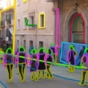

|  |
MATLAB Toolbox for the LabelMe Image
Database
Download Download (.zip) the toolbox and add it to the Matlab path. Citation If you use this dataset or the functions on this toolbox, we would appreciate if you cite: B. C. Russell, A. Torralba, K. P. Murphy, W. T. Freeman, Contribution If you find this dataset useful, you can help us to make it larger by visiting the annotation tool and labeling several objects. Even if your contribution seems small compared to the size of the dataset, everything counts! We also welcome submissions of copyright free images. Your annotations and images will be made available for download inmediately. |
|
Toolbox description A quick look into the dataset The toolbox allows you using the dataset online without needing to download it first. Just execute the next lines to visualize the content of one of the folders of the collection: HOMEANNOTATIONS = 'http://labelme.csail.mit.edu/Annotations';
This example, reads the images online. Installing a local copy of the database will allow you having faster access to the images and annotations and it will reduce the load on our server. Downloading the LabelMe database To download the images and annotations you can use the function LMinstall: HOMEIMAGES = '/desired/path/to/Images'; Set the variables HOMEIMAGES and HOMEANNOTATIONS to point to your local paths. Downloading the entire LabelMe database can be quite slow. For additional download options, follow the instructions here. Reading the index The annotation files use XML format. The function LMdatabase.m reads the XML files and generates a matlab struct array that will be used to perform queries and to extract segmentations from the images. To build the index for the entire dataset, execute: D = LMdatabase(HOMEANNOTATIONS); D is an array with as many entries as there are annotated images. For
image n, some of the fields are: Where n and m are the image and object indices respectively. Type help LMdatabase to see how to build the index for only some folders of the dataset. Visualization Once you have created the LabelMe index D, you can visualize the annotations for an image with the function LMplot: LMplot(D, 1, HOMEIMAGES); You can also visualize a set of images or object crops: LMdbshowscenes(D(1:30), HOMEIMAGES); % shows the first
30 images Queries To perfom searches for images, scenes, objects, etc, you can use the function LMquery. This function allows searching for the content of any field. [Dcar, j] = LMquery(D, 'object.name', 'car'); The new struct Dcar contains all the images with cars and all other objects have been removed. The index array j points to the original index D. The struct D(j) contains all the images with cars without excluding other objects. The LMquery function does not assume a predefined list of fields. You can use this function to query with respect to any field. Therefore, if you add new fields inside the XML annotation files, you can still use LMquery to search with respect to the content of the new fields. Exclusion can be used to narrow down a search. Compare this two:
LMdbshowobjects(LMquery(D, 'object.name', 'mouse+pad'), HOMEIMAGES); You can also combine searches. This next line select objects that belong to one of this groups: 1) side views of cars, 2) buildings 3) roads or 4) trees: [Dcbrt, j] = LMquery(D, 'object.name', 'car+side,building,road,tree'); You can also do AND combinations by using several queries. For instace, to get a list of images that contain buildings, side views of cars and trees you can do: [D1,j1] = LMquery(D, 'object.name', 'building'); The index array j points to all the images containing the three objects. Note that D(j) will also contain other objects, but it is guaranteed to contain the previous three. Extracting polygons and segments The toolbox provides with a set of generic function to extract polygons and segments from the annotations. To extract the polygon coordinates for one object, you can use:
[x,y] = LMobjectpolygon(Dcar(1).annotation, 1); In this case, the function returns the first polygon of the first image in the index. The function LMobjectpolygon returns a cell array. One entry for each polygon requested. To extract segmentation masks you can use the function LMobjectmask: [mask, class] = LMobjectmask(D(1).annotation, HOMEIMAGES); You can use this function to extract segmentation masks for all the objects that belong to a single category or for individual polygons. Do help LMobjectmask to see more examples. Here is a summary of the function available: The function LM2segments.m transforms all the annotations into segmentation masks and provides a unique index for each object class. Image manipulation To crop and resize images and annotations: LMimscale - scales an image and the corresponding annotation Collecting annotation statistics The database contains many different object names. In order to see the list of object names and the number of times each object appears, you can use the function LMobjectnames. The next set of lines shows the distribution of object names: [names, counts] = LMobjectnames(D); Dealing with synonims and labeling noise As there are not specific instructions about how labels should be introduced when using the online annotation tool, this results in different text descriptions used for the same object category. For instace, a person can be described as a "person", "pedestrian", "person walking", "kid", etc. Therefore, it is important that you unify the annotations. The way the annotations can be unified will depend on what you want to do. Therefore, here we provide a set of tools to replace object names. LMreplaceobjectname This function is useful when you want to replace a few object names. In order to replace an object name, you can use the function LMreplaceobjectname. For instance, the next line replaces all the object names that contain the string 'person' or 'pedestrian' by the string 'person'. D = LMreplaceobjectname(D, 'person,pedestrian', 'person', 'rename'); Type help LMreplaceobjectname to see other options. LMaddtags The function LMaddtags replaces LabelMe object descriptions with the names in the list tags.txt. You can extend this list to include more synonyms. Use this function to reduce the variability on object labels used to describe the same object class. However, the original labelme descriptions contain information that is more specific and you might want to generate other tag files to account for a specific level of description. Details on the structure of the text file is given bellow. To call the function: tagsfilename = 'tags.txt'; After running this line, the struct D will contain a unified list of objects. The variable 'unmatched' gives the list of labelme descriptions that were not found inside tags.txt. The file tags.txt contains a list of tags and the labelme descriptions that will get map to each tag. You can add more terms to tags.txt. For instance, the next lines will unify a few of the descriptions into the tags 'person' and 'car'. (lmd means LabelMe Description). TAG: person LMaddwordnet Another way of unifiying the annotations is using Wordnet. You can see a demo in the script: demoWordnet.m. sensesfile = 'wordnetsenses.txt'; % this file contains the list of wordnet
synsets. We can now use the power of wordnet to do more than unify the annotations. We can extend the annotations by including other terms. For instance, you can explore the Wordnet tree here. The online search tool uses wordnet to extent the annotations. For instance, we can search for animals (query = animal) despide that users rarely provided this label. Annotate your own images The function LMphotoalbum creates a web page with thumbnails connected with the annotation tool online. You can use this function to create a page showing images to annotate. This is useful if you want other people to help you, you can create one page for each person with a different partition of the set of images that you want to label. LMphotoalbum(folderlist, filelist, webpagename, HOMEIMAGES); For instance, if you want to create a web page with images of kitchens, you can do: D = LMquery(D, 'folder', 'kitchen'); If you want to annotate your own images, you need to upload them to LabelMe first. If you have a set of images you can send us an email with a link to a file with all your images. We will create a folder in LabelMe with your images. The pictures that you upload, along with the annotations that you provide, will be made available for computer vision research as part of the LabelMe database. Scene recognition Gist descriptor Here we provide a function to compute the gist descriptor as described in: - Aude Oliva, Antonio Torralba. Modeling the shape of the scene: a holistic representation of the spatial envelope. International Journal of Computer Vision, Vol. 42(3): 145-175, 2001. To compute the gist descriptor on an image you can use the function LMgist. Here is one example that reads one image and computes the descriptor. % Load image You can also compute the gist for a collection of images: gist = LMgist(D, HOMEIMAGES, param); The output is an array of size [Nscenes Nfeatures], where Nscenes = length(D). Estimation of the horizon line using the Gist descriptor The goal is to estimate the location of the horizon line on an image. This function uses the approach described in: - A. Torralba, P. Sinha. Statistical context priming for object detection.
ICCV 2001. To estimate the location of the horizon line call the function getHorizon.m. This function returns the location of the horizon line. The units represent the distance to the center of the image (normalized units with respect to image height): h = getHorizon(img); % h is a value in the range [-0.5,
0.5] The estimator has already been trained using street scenes. The parameters of the estimator are in the file streets_general_camera_parameters.mat If you want to retrain the estimator you can use the script: trainHorizon.m. The training data is stored in the file streets_general_camera_training.mat. Inside that file, the variable 'hor' contains all the training data and the list of LabelMe images used for training. SIFT descriptor Here we provide a function to compute dense SIFT features as described in: - S. Lazebnik, C. Schmid, and J. Ponce. Beyond Bags of Features: Spatial Pyramid Matching for Recognizing Natural Scene Categories, CVPR 2006. The function LMdenseSift.m computes a SIFT descriptor at each pixel location (in this implementation there is no ROI detection as in the original definition by D. Lowe). This function is a modification of the code provided by S. Lazebnik. The current implementation uses convolutions. Here there is an example of how to compute the dense SIFT descriptors for an image and to visualize the descriptors as described in Liu et al 09. % demo SIFT using LabelMe toolbox Other related functions: demoVisualWords.m, LMkmeansVisualWords.m, LMdenseVisualWords.m
|
Let us know if you encounter bugs or have suggestions.
(c) 2008 MIT, Computer Science and Artificial Intelligence Laboratory.